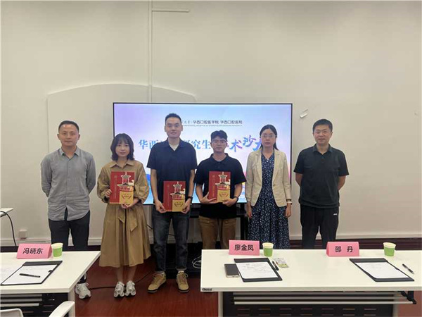

学院通知 · 科研创新
“立足基础·聚焦前沿”基础医学系研究生学术沙龙活动圆满举办
发布时间：2025/09/05
2025年8月28日下午，我院研究生部联合基础医学系主办的研究生学术沙龙活动在华西校东区第四教学楼成功举办。本次活动特邀来自基础医学系的国家级高层次人才冯晓东研究员、刘锐研究员、廖金凤研究员和邵丹研究员担任指导嘉宾。师生齐聚一堂，围绕前沿学术话题展开深入讨论。 沈欣然同学（导师林云锋教授）报告了鼻内靶向递送纳米粒治疗中枢神经系统炎症的研究，为中枢神经系统炎症的治疗提供了创新性策略。周剑鹏同学（导师石玉研究员）介绍了O-GIcNAc糖基化修饰在BMP信号介导Gli1+ MSCs参与牙骨质形成拔牙窝愈合中的作用探究，这一机制为口腔骨缺损修复提供了新的分子靶点。崔浩同学（导师李太文副研究员）基于生物信息学方法，运用空间多组学技术对头颈鳞癌免疫微环境进行了探究性解析。 基础医学系副主任李西宇研究员对本次活动进行学术分享的同学进行了充分肯定，鼓励在场同学加强学术交流，共同营造学术互动氛围。本次活动为基础医学领域研究生打造了深度交融的学术对话平台，也进一步助力我院研究生形成多维度、跨层次的科学研究思维。
